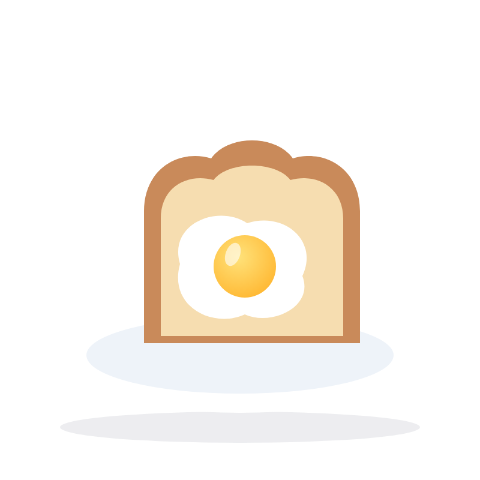

文法解説動画
冠詞練習問題
全25問 一緒に声に出して練習しよう！

文法解説動画
全25問 一緒に声に出して練習しよう！

6問
5問

6問

8問
動画1のおさらい ・ 6問


昨日、新しいバッグを買いました。そのバッグは黒いです。
昨日、新しいバッグを買いました。そのバッグは黒いです。
答えa / The
1つめ初登場なので → a
2つめ「さっきのバッグ」と分かるので → the

彼女は英語の先生です。
彼女は英語の先生です。
答えan
理由English は「イ」の音（母音）で始まるので → an

彼は大学生です。
彼は大学生です。
答えa
理由university は「ユ」の音（子音）で始まるので → a
1時間待ちました。
1時間待ちました。
答えan
理由hour は h を読まず「ア」の音で始まるので → an
そのドアを閉めてください。
そのドアを閉めてください。
答えthe
理由その場にいる人が、どのドアか分かるので → the
今日は太陽がとてもまぶしいです。
今日は太陽がとてもまぶしいです。
答えThe
理由太陽は1つだけで、どれのことか特定できるので → the
動画3のおさらい ・ 6問
私は犬が好きです。
私は犬が好きです。
答えなし（冠詞をつけない）
理由犬全般の話（複数名詞）なので → 冠詞なし
総まとめ ・ 8問


彼女は看護師です。
She is a nurse.
彼女は看護師です。
ポイント職業は a / an をつける

彼はエンジニアです。
He is an engineer.
彼はエンジニアです。
ポイントengineer は母音の音で始まるので an
私は昨日、あるカフェに行きました。
そのカフェはとても混んでいました。
I went to a cafe yesterday.
The cafe was very crowded.
私は昨日、あるカフェに行きました。そのカフェはとても混んでいました。
ポイント初登場は a、2回目は「さっきのカフェ」なので the